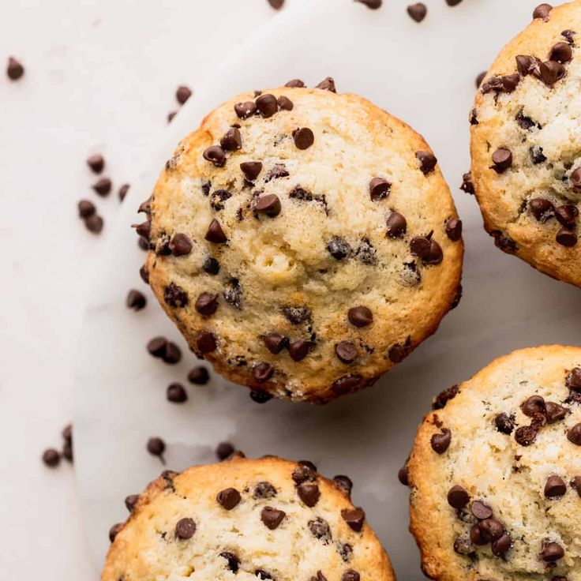

HEAVENLY PASTERIES
HOME
RECIPES
ABOUT
SUBMIT
Search
CHOCOLATE CHIP MUFFINS

INGREDIENTS
¾ cup milk
½ cup vegetable oil
1 large egg
2 cups all-purpose flour
½ cup white sugar
2 teaspoons baking powder
½ teaspoon salt
¾ cup mini semi-sweet chocolate chips
1 ½ tablespoons white sugar
1 tablespoon brown sugar
INSTRUCTIONS
Gather all ingredients. Preheat the oven to 400 degrees F (200 degrees C). Grease a 12-cup muffin tin or line cups with paper liners.
Combine milk, oil, and egg in a small bowl until well blended.
Combine flour, 1/2 cup sugar, baking powder, and salt together in a large bowl, making a well in the center.
Pour milk mixture into well and stir until batter is just combined; fold in chocolate chips.
Spoon batter into the prepared muffin cups, filling each 2/3 full.
Combine 1 ½ tablespoons white sugar and 1 tablespoon brown sugar in a small bowl; sprinkle on tops of muffins.
Bake in the preheated oven until tops spring back when lightly pressed, about 18 to 20 minutes.
Cool in the tin briefly, then transfer to a wire rack. Serve warm or cool completely.
 HEAVENLY PASTERIES
HEAVENLY PASTERIES